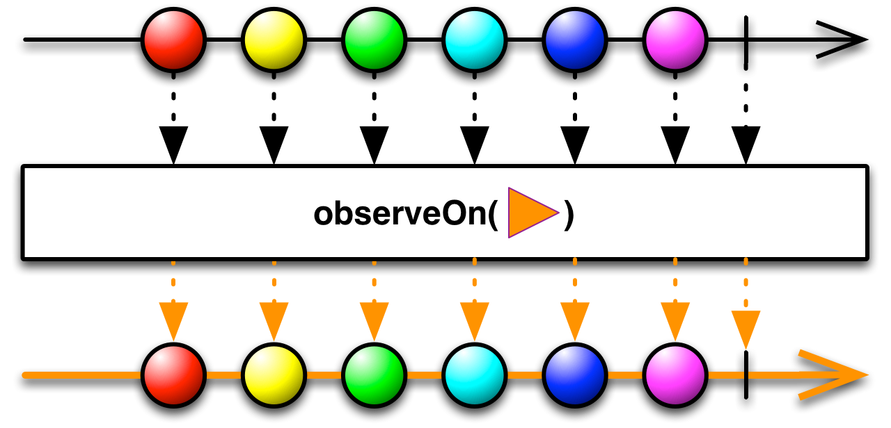
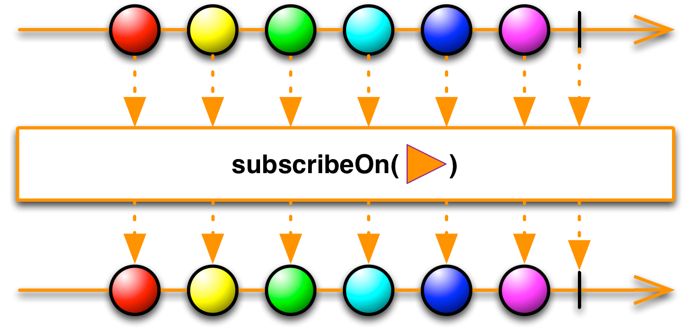
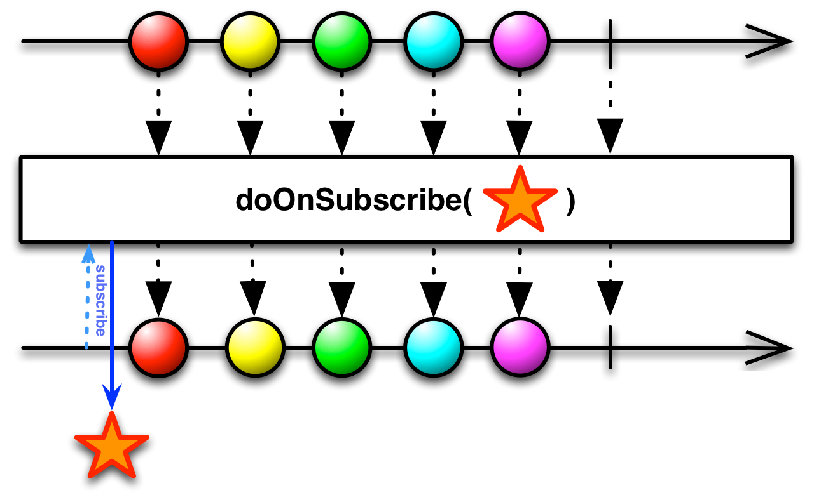
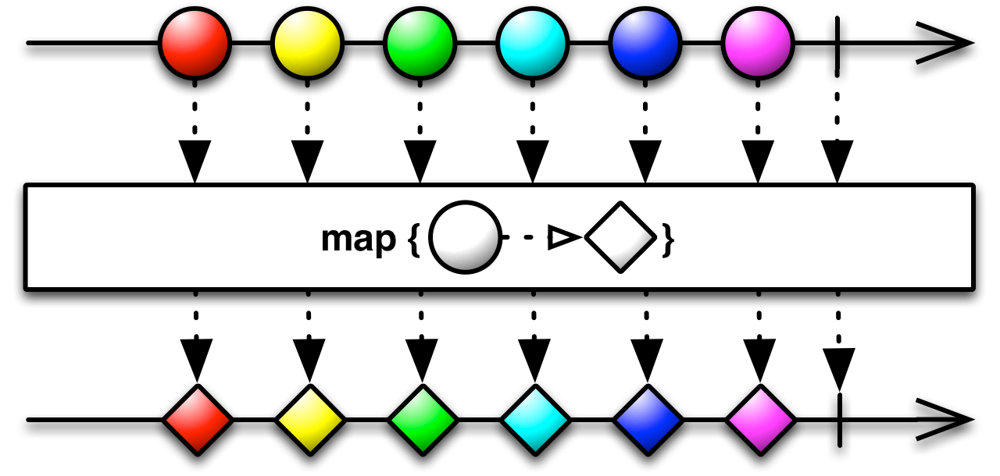
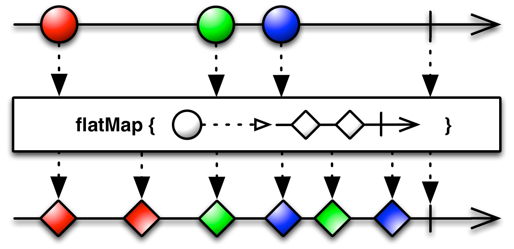
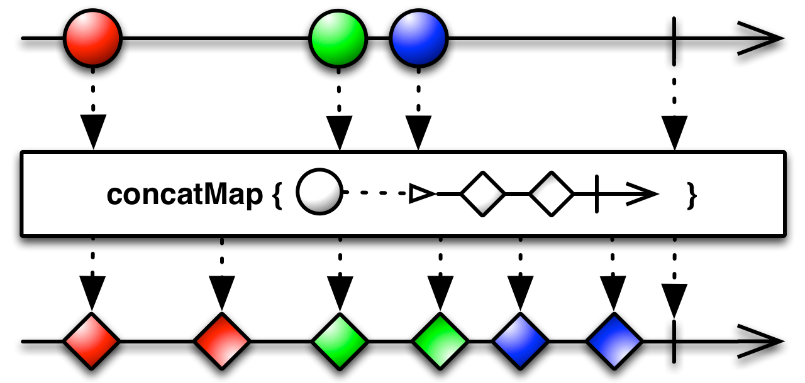
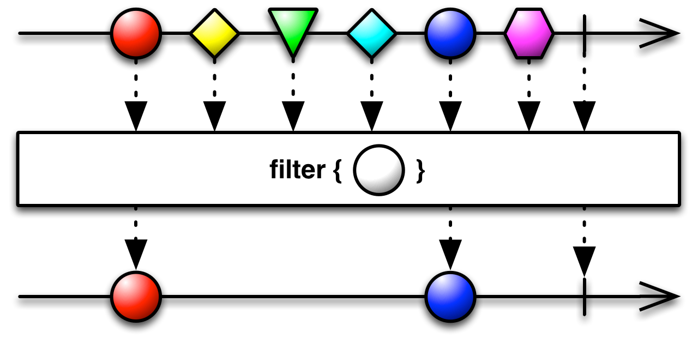
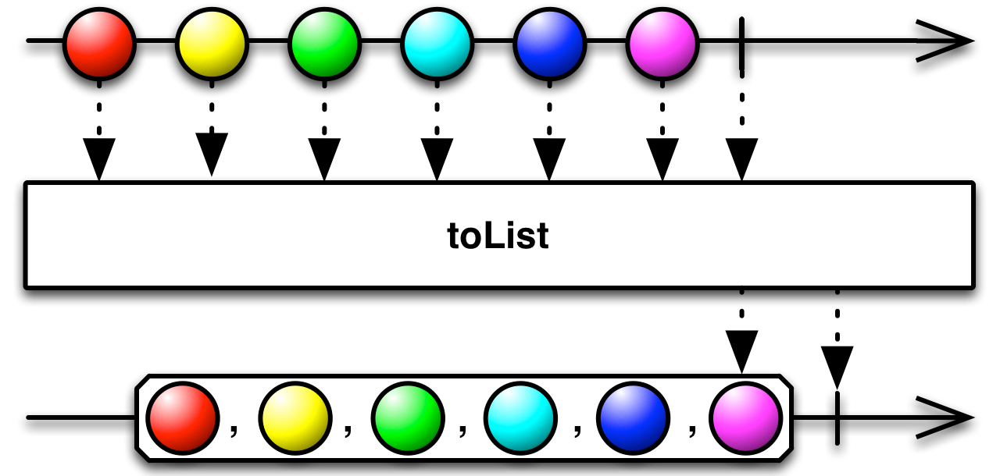

观察者模式实现
Observable：被观察者类，这个类就是观察者模式中的被观察对象。当触发某些事件后，就可以向观察者推送通知
Observer：观察者接口，当订阅了 Observable，Observable 就可以调用 Observer 接口函数对其进行通知
现在用 RxJava 实现一个简单的观察者模式
首先创建一个被观察者对象：
1 | Observable<String> observable = Observable.create(new Observable.OnSubscribe<String>() { |
然后创建一个观察者对象：
1 | Observer<String> observer = new Observer<String>() { |
观察者对象订阅被观察者对象：
1 | observable.subscribe(observer); |
实现功能：被观察对象调用观察者接口方法 onNext 传输字符串，然后调用 onCompleted 结束，观察者对象收到通知后，打印出得到的字符串
Observer 接口详解
Observer 接口有三个函数：onNext、onCompleted、onError
onNext - void onNext(T t)：该方法用于被观察者向观察者的信息传送。当被观察者调用 onCompleted 或者 onError 后，将不再传输 onNext 方法到观察者
onCompleted - void onCompleted()：该方法用于通知观察者，被观察者结束发送信息了。当被观察者已经调用 onError 方法后，其后的 onNext 和 onCompleted 方法都将无效
onError - void onError(java.lang.Throwable e)：该方法用于通知观察者，自己遭遇了一个错误，结束发送信息了。当被观察者已经调用 onError 方法后，其后的 onNext 和 onCompleted 方法都将无效
Observable 类介绍
Observable 类内容比较复杂，还没有完全理清，下面就记录关于如何创建 Observable，以及如何进行订阅
上面用到了 Observable.create 方法：
1 |
|
指定传送信息的类型（比如 String）
也可以直接输入一组数据的方法 Observable.from：
1 | public static Observable from(T[] array) |
实现代码：
1 | String[] arr = {"Hello World", "Hi zj"}; |
或者使用方法 Observable.just：
public static Observable just(T value)
1 | Observable<String> observable = Observable.just("Hello World", "Hi zj"); |
链式编程
RxJava 可以实现链式编程，修改上面的程序如下：
1 | Observable.just("Hello World", "Hi zj") |
Note：Observable 的信息发送和 Observer 的信息处理均发生在 subscribe（订阅）之后
Subscriber 使用
Subscriber 是一个抽象类，继承了 Observer 接口：
1 | public abstract class Subscriber<T> extends java.lang.Object |
Subscriber 同时扩展了一些新的函数，可以使用 Subscriber 类替代 Observer 接口。
比如Subscriber 提供了手动取消订阅的方法 unsubscribe：
1 | public final void unsubscribe() |
当在函数 onCompleted 之前调用 unsubscribe，将会不再接收接下来的信息
调用 unsubscribe 还可以避免内存泄漏的风险，所以尽量在不需要使用后调用此函数
参考：RxJava的使用
也可以查询是否订阅 - isUnsubscribed：
1 | public final boolean isUnsubscribed() |
返回为 true 表明已取消订阅
Subscriber 类还新增了方法 onStart:
1 | public void onStart() |
该方法在被观察者已经和观察者连接，但还没有发出通知之前被调用，比如弹出进度条，增加有用的初始化信息
使用 Subscriber 类实现观察者模式如下：
1 | Observable.just("Hello", " World", "Hi", " zj") |
Note：接下来将使用 Subscriber 替代 Observer
Action 使用
Action 是一个接口，没有任何函数或参数，但是其他 ActionX（X 表示数字）接口都继承自它，ActionX（X 表示数字）接口仅有一个函数 call，其参数随数字 X 的变化而增大
当没有参数时，可以使用 Action0 接口：
1 | public interface Action0 extends Action |
它有单个函数 call：
1 | void call() |
当有单个参数时，可以使用 Action1 接口：
1 | public interface Action1 extends Action |
它的函数 call 有一个参数：
1 | void call(T t) |
以此类推，直到 Action9 接口，如果需要大于 9 个参数的接口，可以使用 ActionN：
1 | public interface ActionN extends Action |
其函数 call 的参数为数组形式：
1 | void call(java.lang.Object... args) |
使用 Action1 替代 Observer 或者 Subscriber
从上面描述可知，可以显式创建 Observer 接口或者 Subscriber 类作为观察者对象，RxJava 同样也提供了 Action 接口来隐式处理被观察者发送的通知
1 | public final Subscription subscribe(Action1<? super T> onNext) |
RxJava 提供了三种方式，可以仅处理观察者发出的 onNext 方法，也可以处理 onNext 和 onError，或者实现 onNext，onError，onCompleted，示例代码如下：
1 | Action1<String> onNext = new Action1<String>() { |
Note：如果被观察者发送了 onError 后，必须在订阅时也实现该方法
Scheduler 使用
上面描述的程序运行均在同一线程内，使用 Scheduler 类可以实现异步处理
1 | public abstract class Scheduler extends java.lang.Object |
Scheduler 可以调度不同任务在不同的线程内。RxJava 已经封装了一些常用的 Scheduler 对象，可以在 Schedulers 类中找到：
1 | public final class Schedulers extends java.lang.Object |
当进行 io 操作时，可以使用 Schedulers.io：public static Scheduler io()
当进行密集计算工作时，可以使用 Schedulers.computation：public static Scheduler computation()
Note：不要混淆上面两个 Scheduler 对象，当进行计算操作时，就调用 computation；当进行io 操作时，就调用 io
如果仅需要新建一个线程，可以使用 Schedulers.newThread：public static Scheduler newThread()
对于 Android 开发，还可以调用 AndroidThread.mainThread 来指定主线程：public static Scheduler mainThread()
observeOn、subscribeOn 和 doOnSubscribe
subscribeOn:
1 | public final Observable<T> subscribeOn(Scheduler scheduler) |
官方介绍：
Asynchronously subscribes Observers to this Observable on the specified Scheduler.
If there is a create(Action1, rx.Emitter.BackpressureMode) type source up in the chain, it is recommended to use subscribeOn(scheduler, false) instead to avoid same-pool deadlock because requests pile up behind a eager/blocking emitter.
observeOn:
1 | public final Observable<T> observeOn(Scheduler scheduler) |
官方介绍：
Modifies an Observable to perform its emissions and notifications on a specified Scheduler, asynchronously with a bounded buffer of RxRingBuffer.SIZE slots.
Note that onError notifications will cut ahead of onNext notifications on the emission thread if Scheduler is truly asynchronous. If strict event ordering is required, consider using the observeOn(Scheduler, boolean) overload.
doOnSubscribe：
1 | public final Observable<T> doOnSubscribe(Action0 subscribe) |
官方介绍：
Modifies the source Observable so that it invokes the given action when it is subscribed from its subscribers. Each subscription will result in an invocation of the given action except when the source Observable is reference counted, in which case the source Observable will invoke the given action for the first subscription.
通过网上博文学习到：
observeOn
影响的是跟在后面的操作（指定观察者运行的线程）。所以如果想要多次改变线程，可以多次使用 observeOn；

Note：调用 observeOn 后箭头颜色变化了，说明 observeOn 仅改变之后操作所在线程
subscribeOn
影响的是最开始的被观察者所在的线程。当使用多个 subscribeOn() 的时候，只有第一个 subscribeOn() 起作用；

Note：subscribeOn 的使用改变了前后的箭头颜色，说明 subscribeOn 改变的是被观察者所在的线程
doOnSubscribe
当被观察者需要在订阅后，运行前设置初始信息，比如进度条，可以调用 doOnSubscribe。默认情况下， doOnSubscribe() 执行在 subscribe() 发生的线程；而如果在 doOnSubscribe() 之后有 subscribeOn() 的话，它将执行在离它最近的 subscribeOn() 所指定的线程

Note：调用 doOnSubscribe 后，将会运行在订阅后最开始的位置
示例：
1 | Observable.create(new Observable.OnSubscribe<Integer>() { |
Function 使用
Function 接口使用和 Action 接口类似，区别只是 Function 接口中函数 call 有返回值，比如 Func1 接口：
1 | public interface Func1<T,R> extends Function |
泛型 T 表示参数类型，泛型 R 表示返回值类型。call 函数格式如下：
1 | R call(T t) |
map、flatMap、concatMap 使用
map
1 | public final <R> Observable<R> map(Func1<? super T,? extends R> func) |
官方介绍：
Returns an Observable that applies a specified function to each item emitted by the source Observable and emits the results of these function applications.
流程图：

调用函数 map 后，可以转换传输信息的类型，比如从一个类中取出某个字段，将图像 id 值转换为 Bitmap：
1 | Observable.just(android.R.drawable.alert_dark_frame) |
先开启新线程，传送 Integer 类型信息；
然后在 io 线程中加载图像，从而传输信息类型转为 Bitmap；
最后转回主线程，显示图像
flatmap
1 | public final <R> Observable<R> flatMap(Func1<? super T,? extends Observable<? extends R>> func) |
官方介绍：
Returns an Observable that emits items based on applying a function that you supply to each item emitted by the source Observable, where that function returns an Observable, and then merging those resulting Observables and emitting the results of this merger.
流程图：

flatMap 方法获取了原来的被观察者发送的 item，然后转换为一个 Observable 对象，将所有转换后得到的被观察者对象收集起来后，再向下传送（具体使用场景还没有想出来，可能在实际工程中使用后会更加理解）
示例代码如下：
1 | Observable.just(1, 2, 3, 4, 5, 6, 7, 8, 9) |
Note：可以对 flatMap 方法生成的 Observable 对象调用 subscribeOn 和 observeOn，这样，每个生成的 Observable 运行在不同的线程中
concatMap
1 | public final <R> Observable<R> concatMap(Func1<? super T,? extends Observable<? extends R>> func) |
官方介绍：
Returns a new Observable that emits items resulting from applying a function that you supply to each item emitted by the source Observable, where that function returns an Observable, and then emitting the items that result from concatenating those resulting Observables.
流程图：

作用和 flatMap 类似，唯一区别就是返回结果是按输入顺序返回的，而 flatMap 的顺序不定。
示例代码：
1 | Observable.just(1, 2, 3, 4, 5, 6, 7, 8, 9) |
filter、toList 使用
filter
1 | public final Observable<T> filter(Func1<? super T,java.lang.Boolean> predicate) |
官方介绍：
Filters items emitted by an Observable by only emitting those that satisfy a specified predicate.
顾名思义，就是筛选被观察者发送的通知。流程图如下：

示例 - 过滤掉偶数：
1 | Observable.just(1, 2, 3, 4, 5, 6) |
toList
1 | public final Observable<java.util.List<T>> toList() |
将被观察者发送的所有信息结合为单个列表，然后发送给观察者
流程图如下：

示例：
1 | Observable.just(1, 2, 3, 4, 5, 6) |